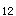

A.早期诊断
B.彻底手术
C.积极放疗
D.早期化疗
E.综合治疗
参考答案：A
A.慢性胃窦胃炎
B.慢性浅表性胃炎
C.胃溃疡
D.十二指肠溃疡
E.慢性胃体胃炎
参考答案：E
A.询问有无服药史、应激等诱因
B.详细的腹部体检
C.即送血常规、大便常规检查
D.B超检查
E.纤维胃镜检查
A.雷尼替丁
B.阿托品
C.丙谷氨
D.洛塞克
E.硫糖铝
参考答案：D
A.肝脏呈进行性肿大
B.肝脏质地坚硬，表面凹凸不平
C.肝脏多先增大而后缩小
D.癌肿表面可闻及吹风样血管杂音
E.常有不同程度的压痛
参考答案：C
A.急性单纯性胃炎
B.慢性胃体胃炎
C.慢性胃窦胃炎
D.胃溃疡
E.十二指肠壶腹部溃疡
参考答案：B
A.口服去甲肾上腺素
B.双气囊三腔管压迫
C.冰盐水洗胃
D.甲氰咪胍静脉注射
E.纤维胃镜下高频电灼
A.低钾性碱中毒
B.低氯高钾酸中毒
C.低氯低钾酸中毒
D.低氯高钾碱中毒
E.低氯低钾碱中毒
A.呕血及黑粪
B.腹痛
C.腹泻
D.黄疸、恶心、呕吐
E.胸痛
A.使用镇痛泵
B.提供舒适，安静的环境
C.与别人交谈分散患者的注意力
D.遵照医嘱应用止痛药
E.限制止痛药的应用
A.黑粪次数增多伴肠鸣音亢进
B.网织红细胞计数持续增高
C.黑粪由糊状变为成形略带黄色
D.呕吐物由咖啡色转为鲜红色
E.血尿素氮恢复正常后又升高
A.无一定规律
B.疼痛-进食-缓解
C.进食-疼痛-无缓解
D.进食-疼痛-缓解
E.疼痛-进食-疼痛
A.食管下端静脉曲张
B.脐周静脉曲张
C.腹壁静脉曲张
D.下肢静脉曲张
E.痔静脉曲张
A.主细胞
B.壁细胞
C.黏液细胞
D.B细胞
E.主细胞、壁细胞和黏液细胞
A.反复呕血
B.黑粪次数增加伴肠鸣音亢进
C.血红蛋白测定与红细胞计数继续下降
D.网织红细胞计数持续下降
E.血压继续下降
A.门静脉压力增高
B.淋巴液生成过多
C.继发性醛固酮和抗利尿激素减少
D.低蛋白血症
E.排尿减少
A.恶心、呕吐
B.出血倾向
C.黄疸迅速加深
D.腹水
E.中枢神经系统症状
A.胃液分析时多灶萎缩性胃炎患者胃酸正常或增多
B.自身免疫性胃炎患者胃酸缺乏
C.自身免疫性胃炎患者血清促胃泌素水平常明显升高，伴恶性贫血时更甚
D.慢性胃炎患者血清中可测得抗壁细胞抗体和抗内因子抗体
E.多灶萎缩性胃炎患者血清促胃泌素水平升高
A.保持愉快、稳定的情绪，积极配合治疗原发病
B.嘱患者戒酒，养成良好的饮食卫生习惯
C.避免性生活
D.进行疾病相关知识的宣教，避免病因及诱因
E.在医生严格指导下应用非甾体抗炎镇痛药物
A.上腹痛是进展期胃癌最早出现的症状
B.在上腹部偏右处，可触及坚实、可移动的结节状肿块，有压痛
C.溃疡型胃癌出血时可有黑粪或呕血
D.肺部出现哮鸣音
E.可出现伴癌综合征
A.清洁洗胃
B.静脉滴注碳酸氢钠
C.服牛奶
D.经口腔气管插管
E.肌内注射镇静剂
A.焦虑
B.潜在并发症有胃穿孔、上消化道出血
C.营养失调
D.腹痛
E.预感性悲哀
A.呼吸性碱中毒
B.代谢性碱中毒
C.代谢性酸中毒
D.呼吸性酸中毒
E.呼吸性碱中毒、代谢性酸中毒
A.减少肠道氨的吸收
B.严格限制钠的摄入
C.抑制假性神经递质
D.减轻肝脏解毒功能
E.防止损伤食管黏膜而出血
A.雌激素灭活功能减退
B.肾上腺皮质功能减退
C.雌、雄激素比例失调
D.抗利尿激素增多
E.醛固酮增多
A.使肠内呈酸性，减少氨吸收
B.保护肝细胞
C.为大脑提供能量
D.抑制脑内假神经递质合成
E.与游离氨结合，从而降低血氨
A.术后2小时即可进食温流食
B.术后30～60分钟咽喉部无麻木感即可饮少量水
C.术后患者如无不适即可进食温流食
D.术后如无特殊变化，第二餐可恢复正常饮食
E.术后第一餐一般不给予普食
A.心率增快
B.血压下降
C.腹痛加重
D.黑粪
E.血尿素氮增高
A.食管胃底静脉曲张破裂
B.急性胃炎
C.消化性溃疡
D.胃癌
E.食管癌
A.血沉
B.大便隐血试验
C.胃液检查
D.胃镜及活检
E.X线钡餐检查
C.胃镜检查
D.胃镜检查结合黏膜活检
A.粘连型
B.渗出型
C.干酪型
D.混合型
E.坏死型
A.肠管狭窄
B.肠管收缩畸形
C.肠管充盈缺损
D.跳跃现象
E.黏膜皱襞紊乱
A.餐前
B.餐后1小时及睡前服用一次
C.两餐之间
D.每日清晨一次
E.进餐时与食物同服
A.西咪替丁
B.雷尼替丁
C.奥美拉唑
D.硫糖铝
E.枸橼酸铋钾
A.浅表性胃炎
B.萎缩性胃炎
D.十二指肠壶腹部溃疡
E.胃癌
A.上腹疼痛、呕吐物带血液、上腹疼痛
B.上腹疼痛伴压痛
C.恶心、呕吐伴腹泻
D.上腹痛、发热、失水、酸中毒
E.腹痛、呕吐伴腹泻
A.左侧卧位
B.右侧卧位
C.平卧位
D.半卧位
E.头低脚高位
A.频繁呕吐
B.休克
C.高热
D.低钙、抽搐
E.血糖升高、糖尿
A.法莫替丁
B.奥美拉唑
C.碳酸氢钠
A.胃炎
B.幽门梗阻
D.胆石症
E.肝炎
A.慢性活动性肝炎
B.感染血吸虫病
C.长期大量酗酒
D.长期服用甲基多巴
E.长期接触染发剂
B.非甾体抗炎镇痛药
C.吸烟
D.饮酒
E.幽门螺杆菌感染
A.脾大
B.脾功能亢进
C.消化道器官淤血
D.腹水形成
E.中心静脉压高
A.0.5mg/dl
B.1．0mg/dl
C.1.5mg/dl
D.2.0mg/dl
E.2.5mg/dl
A.餐后1小时及睡前服用一次
B.餐前半小时
A.贫血
B.消瘦
C.舌炎
D.反酸
E.腹胀
A.出血期间应禁食
B.止血后即可渐进高热量、高蛋白饮食
C.避免粗糙、坚硬食物
D.避免刺激性食物
E.应细嚼慢咽
A.无渣流质或半流质饮食
B.多食水果及纤维素多的蔬菜
C.应多食牛奶或乳制品
D.可进食冷饮
E.高蛋白、高纤维素、高热量普食
A.活组织检查
B.胃肠钡餐检查
C.纤维胃镜检查
D.胃液分析
E.血清学检查
A.与溃疡面结合形成保护屏障
B.使壁细胞的H，K-ATP酶失活
C.与盐酸作用形成盐和水
D.通过选择性竞争结合H受体，使壁细胞分泌胃酸减少
E.可刺激局部内源性前列腺素的合成
A.出血
B.穿孔
C.癌变
D.幽门梗阻
E.胃动力障碍
A.硫糖铝在餐前服用
B.硫糖铝有黏膜保护作用
C.奥美拉唑应在餐前服用
D.奥美拉唑应避免与牛奶同时服用
E.奥美拉唑可有效抑制胃酸分泌
A.脉搏变慢
B.尿量>30ml/h
C.肢端温度上升
D.皮肤颜色转为红润
E.神志恢复清楚
A.肺性脑病
B.肝性脑病
C.呼吸衰竭
D.肝癌
E.急性胰腺炎
A.血清淀粉酶测定
B.尿淀粉酶测定
C.血钙测定
D.血清脂肪酶测定
E.血糖测定
A.前驱期
B.昏迷前期
C.昏睡期
D.昏迷期
E.临终期
题目解析：昏迷前期：嗜睡、行为异常、言语不清、书写障碍及定向力障碍。
A.按医嘱给予利尿剂
B.指导病人取半卧位以减轻呼吸困难
C.定期测量腹围
D.进水量限制在1000ml/d左右，准确记录每日出入量
E.低盐饮食，限制每日食盐量为5g
A.平卧位
B.侧卧位
C.头低脚高位
D.头高脚低位
E.半坐位
A.急性胃炎
B.急性胰腺炎
C.急性胆囊炎
D.急性肠炎
E.胃溃疡
A.乙醇中毒
B.药物
C.病毒性肝炎
D.营养失调
E.循环障碍
A.大量放腹水
B.精氨酸静脉滴注
C.口服乳果糖，降低肠腔pH，减少氨形成和吸收
D.静脉注射支链氨基酸补充能量，降低血氨
E.忌用一切对肝肾功能损害的药物
A.红细胞满视野
B.白细胞>15个/HP
C.鲜血便
D.便呈米泔水样
E.脓血便
A.肠道感染
B.胃溃疡出血
C.胃癌
D.十二指肠溃疡出血
E.应激性溃疡
A.静脉补液
B.禁食、洗胃
C.绝对卧床休息
D.解痉镇痛
E.心理护理
A.检查当日早餐进清淡饮食，可少量饮水
B.检查前一日晚餐进无脂肪、低蛋白、高糖饮食
C.晚餐后口服造影剂，禁食、禁饮至次日晨
D.检查前一日中午进高脂肪餐，使胆囊排空
E.第一次摄片如胆囊显影良好则进高脂肪餐，30分钟后再摄片
A.B超检查
B.粪便检查
C.X线钡剂灌肠
D.血液检查
E.结肠镜检
A.上消化道出血
B.原发性肝癌
C.活动性肝炎
D.感染
E.肝脓肿
A.少渣半流质
B.低脂高蛋白半流质
C.高脂高蛋白流质
D.高脂低蛋白流质
E.低脂低蛋白流质
A.慢性肝炎再次复发
B.慢性肝炎并发急性胆囊炎
C.慢性肝炎并发急性胰腺炎
E.脂肪肝
A.溃疡加重
B.食管癌
C.溃疡性结肠炎
E.萎缩性胃炎
A.自发性腹膜炎
B.心力衰竭
C.肾衰竭
D.肝性脑病
E.水电解质紊乱
A.直肠结肠癌变
B.中毒性巨结肠
C.急性肠穿孔
D.直肠癌变
E.结肠大量出血
A.平卧位，头部略抬高
B.三腔二囊管压迫止血
C.暂时给予流质饮食
D.快速滴入血管加压素
E.呕吐时头偏向一侧，防止误吸和窒息
A.X线钡餐检查
B.三联疗法
C.预防性手术治疗
D.大便潜血试验
E.胃镜检查及组织活检
B.高蛋白饮食
C.药物
E.缺钾性碱中毒
A.豆浆
B.牛肉
C.牛奶
D.鸭蛋
E.鸡肉
A.急性穿孔
B.感染
C.大出血
E.癌变
A.大便潜血试验
B.血液检查
D.药物治疗
E.结肠镜检查
A.静脉注射止血药
B.口服去甲肾上腺素
C.贲门周围血管离断术
D.限制性门腔分流术
E.双囊三腔管压迫止血
A.消化道症状
B.上腹部轻压痛
C.大便隐血试验阳性
D.纤维胃镜检查
E.胃肠X线钡餐检查
B.急性重型肝炎
C.肝性脑病
D.肝肾综合征
E.淤胆型肝炎
A.肝硬化并发功能性肾衰
B.肝硬化合并感染
C.肝性脑病前驱期
D.原发性肝癌
A.疼痛部位上腹偏右
B.其典型节律为进食-疼痛-缓解
C.常有\'午夜痛\'
D.多为隐痛、胀痛或烧灼痛
E.进食或口服抗酸药能迅速缓解
A.避免暴饮暴食
B.避免酗酒
C.忌食油腻食物
D.积极治疗胆石症
E.定期预防性应用抑肽酶
A.急性肾衰竭
E.失血性休克
A.病人卧床休息
B.查血、尿淀粉酶
C.观察腹部体征变化
D.嘱病人进全流食
E.静脉应用抗生素
A.暂禁食
B.温热的流食
C.温凉的流食
D.软食
E.普食
A.有黑便不一定有呕血
B.有呕血常伴黑便
C.呕血呈咖啡色是血液在胃内经胃酸作用形成亚铁血红素所致
D.黑便呈柏油样是由于血红蛋白中铁与肠内硫化物作用形成硫化铁所致
E.幽门以上出血表现为呕血，幽门以下出血表现为黑便
A.链霉素
B.庆大霉素
C.泼尼松
D.多潘立酮（吗丁啉）
E.甲氧氯普胺（胃复安）
A.阻断H- K- ATP酶
B.拮抗H受体
C.中和胃酸
D.加速胃排空
E.延缓胃排空
A.去枕平卧
B.安定情绪
C.迅速配血
D.准备双气囊三腔管
E.建立静脉输液途径
A.餐后即开始，持续2小时缓解
B.餐前30分钟出现，进餐缓解
C.餐后2小时出现，进餐缓解
D.餐后1/2～1小时出现，至下餐前缓解
E.餐后3～4小时出现，进餐缓解
A.高热量、高蛋白、高脂肪
B.低脂肪、易消化、少纤维素
C.低热量、低脂肪、低盐
D.高脂肪、高维生素、多纤维素
E.禁食
A.有利于止血
B.防止窒息
C.减少出血
D.改善脑血供
E.降低脑耗氧
A.增加回心血量
B.有利于腹腔积液消退
C.降低腹内压力
D.减轻呼吸困难
E.减轻心脏负荷
A.严重呕血者要暂时禁食8～24小时
B.溃疡伴小量出血一般不需禁食
C.食管静脉曲张破裂出血要禁食
D.一般溃疡出血可进牛奶等流质
E.大便隐血试验持续阳性，应暂时禁食
A.果汁
B.牛奶
C.胡萝卜汁
D.米汤
E.蜂蜜
A.牵引过紧
B.出血量增加
C.使用三腔管不适
D.胃气囊进入食管下端挤压心脏所致
E.局部受压过久，导致局部黏膜糜烂坏死而致
A.温水
B.生理盐水或弱酸性溶液
C.2％碳酸氢钠溶液
D.肥皂水
E.苏打水
A.先向胃气囊充气，充气量足够
B.经常抽吸胃内容物
C.放置6小时后应间断放气
D.放气囊同时，应放松牵引
E.拔管前吞服20～30ml液状石蜡
A.门静脉内压增高
B.血清清蛋白减少
C.肾小球滤过减少
D.醛固酮分泌增多
E.脾功能亢进
A.解除胃痉挛
B.解除胰管痉挛
C.以免胃酸进入十二指肠刺激胰液分泌
D.解除肠梗阻症状
E.减轻弥漫性腹膜炎的症状
A.癌块生长迅速
B.癌块压迫肝管
C.肿瘤侵犯横膈
D.肿瘤液化、坏死
E.肿瘤胸膜转移
A.暴饮暴食
B.酗酒
C.胰管梗阻
D.胆道疾病
E.感染
A.促胃液素
B.胃酸
C.胃蛋白酶原
D.胃蛋白酶
E.碱性黏液
A.呼吸性酸中毒
B.呼吸性碱中毒
D.代谢性碱中毒
E.混合性酸中毒
A.氮质血症
B.发热
C.失血性周围循环衰竭
D.呕血与黑便
E.意识模糊
A.维生素C的吸收
B.维生素C的降解
C.维生素B的吸收
D.维生素B的降解
E.维生素K的吸收
A.可见于任何年龄，青少年居多
B.慢性病程
C.周期性发作
D.节律性上腹痛
E.春秋季节易发作，容易复发
B.抑制壁细胞分泌H的H- K- ATP酶
A.150～200ml
B.250～300ml
C.200～300ml
D.100～300ml
E.250～350ml
A.肝细胞性
B.溶血性
C.阻塞性
D.以上都是
E.以上都不是
A.循环障碍
B.酒精中毒
C.营养障碍
D.病毒性肝炎
E.化学毒物或药物的损害
A.出血倾向和贫血
B.脾肿大
C.侧支循环的建立与开放
E.电解质紊乱
A.1g
B.2g
C.3g
D.4g
E.5g
A.疼痛
B.绝望
A.前驱期-昏迷前期-昏迷期
B.昏迷前期-昏睡期-昏迷期
C.前驱期-昏睡期-昏迷期
D.前驱期-昏迷前期-昏睡期-昏迷期
E.前驱期-昏迷前期-昏睡期
A.食管静脉破裂
B.癌变
C.穿孔
E.出血
A.原发病的性质
B.呕血的次数
C.出血量的多少
D.呕血的颜色
E.出血的速度
A.3P试验
B.血清淀粉酶
C.甲胎蛋白
D.血尿素氮
E.出凝血时间
A.发病年龄多见于老年人
B.好发于胃大弯
C.上腹压痛点常在上腹偏右
D.疼痛多在饭后3～4小时发生
E.X线钡餐检查胃小弯处有影
A.血清白蛋白减少
B.血清醛固酮减少
C.门脉压降低
D.血小板值增高
E.血尿素氮增加
A.服用大剂量的镇痛药
B.进行内脏神经阻滞
C.放置鼻导管
D.开始高热量、低脂肪饮食
E.每2～3小时检查重要生命体征
A.<500ml
B.500～1000ml
C.>1000ml
D.>1500ml
E.1000～1500ml
A.10ml
B.5ml
C.15ml
D.20ml
E.30ml
C.幽门梗阻
D.癌变
A.胃溃疡
B.胃炎
C.十二指肠溃疡
A.穿孔
B.出血
A.患者取平卧位休息
B.遵医嘱严格限制水盐摄入
C.预防褥疮
D.准确记录每日出入液量
E.协助腹腔放液或腹水浓缩回输
D.浅昏迷期
E.深昏迷期
B.十二指肠溃疡
C.急性胰腺炎
E.急性胃炎
A.绝对卧床休息
B.胃肠减压
C.解痉镇痛
D.心理护理
E.出现高度腹胀或肠麻痹时，易选用阿托品肌注
A.肝硬化
D.急性胰腺炎
E.胆结石
A.监测生命体征
B.予以禁食
C.给予强效镇痛剂
D.给予心理安抚
E.给予胃肠减压
A.纤维胃镜
B.粪便隐血试验
C.胃液分泌功能测定
D.幽门螺杆菌检查
E.钡餐检查
A.大肠埃希菌感染
B.金黄色葡萄球菌感染
C.幽门螺杆菌感染
D.沙门杆菌感染
E.嗜盐菌感染
A.球部
B.降部
C.水平部
D.升部
E.降部和升部
A.门体分流手术
C.妊娠急性脂肪肝
D.肝硬化
E.严重胆道感染
A.食管
B.结肠
C.胃、十二指肠
D.胃空肠吻合口
E.胰腺、胆道
A.氨促使氨基酸代谢不平衡
B.氨干扰大脑的供能代谢
C.氨使蛋白质代谢障碍
D.氨引起神经传导异常
E.氨取代正常神经递质
A.血糖
B.血钙
C.血脂肪酶
D.血淀粉酶
E.尿淀粉酶
微信关注